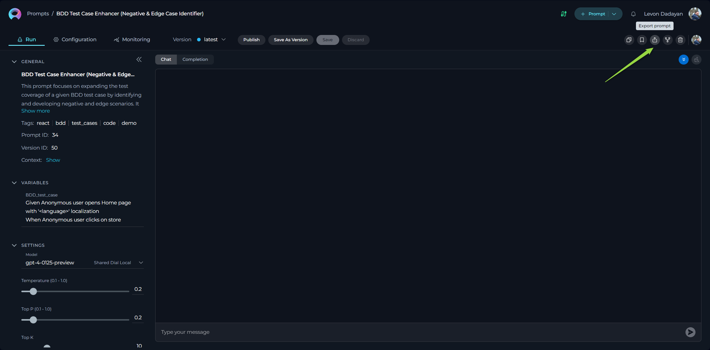
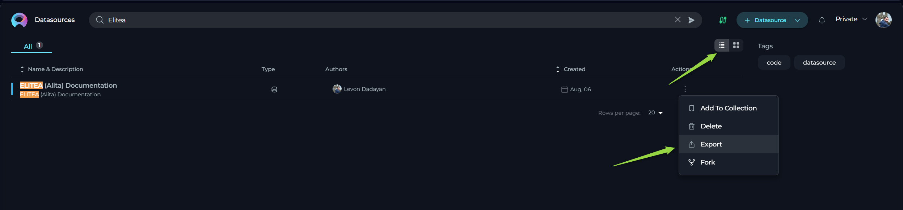
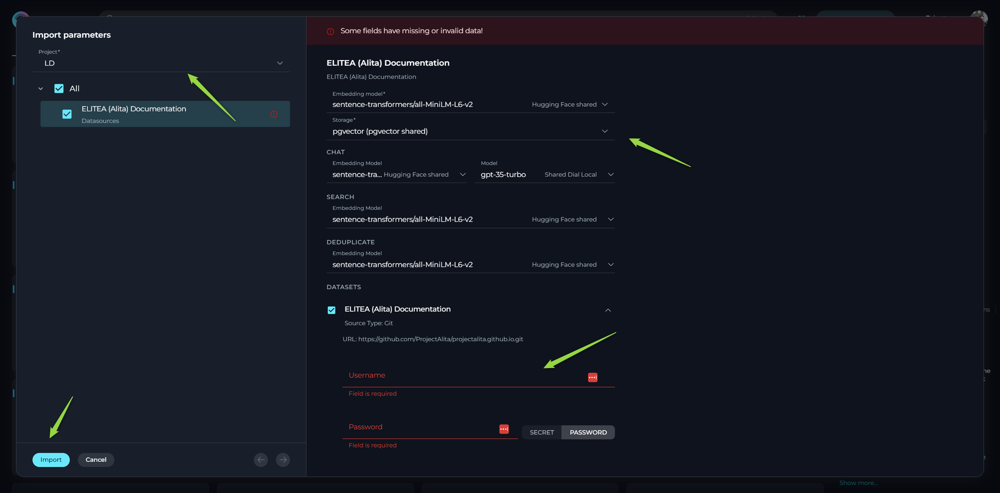

Export and Import Guide: Managing Prompts, Datasources, and Agents for Backup, Migration, and Collaboration
Introduction
This user guide provides a comprehensive overview of the Export and Import features within ELITEA. These powerful functionalities allow you to seamlessly transfer your valuable entities – Prompts, Datasources, and Agents – between different ELITEA environments, projects, or for backup purposes.
The ability to export and import entities offers significant flexibility and control over your AI workflows. You can leverage these features in various scenarios, including:
- Migrating Entities: Effortlessly move your carefully crafted prompts, configured datasources, and intelligent agents from one ELITEA environment to another. For instance, you can migrate entities from an ELITEA Alita LAB environment to a new Nexus environment.
- Sharing and Collaboration: Share your entities with colleagues working in different projects or ELITEA instances, fostering collaboration and knowledge sharing.
- Backup and Recovery: Create backups of your critical entities, ensuring data safety and enabling quick recovery in case of unforeseen issues.
- Development and Testing: Develop and test entities in a dedicated environment and then easily import them into your production environment.
This guide will detail the process of exporting and importing each entity type, along with best practices and practical use cases to help you effectively utilize these features.
Import and Export Features: A General Overview
The Export feature allows you to save a snapshot of your prompts, datasources, or agents as JSON files. These files contain the complete configuration and relevant data of the entity at the time of export.
The Import feature enables you to bring previously exported JSON files back into ELITEA. During the import process, you have the flexibility to configure certain aspects of the imported entity, such as the target project and specific settings.
These features provide a convenient and reliable way to manage and transfer your assets within and across ELITEA environments.
How to Export Entities
ELITEA allows you to export prompts, datasources, and agents individually. The export process is similar for each entity type.
Exporting a Prompt
- Navigate to the Prompts menu within the project containing the prompt you wish to export.
- Locate the specific prompt you want to export from the list.
- Hover over the prompt entry, and you will see several icons appear on the right side.
- Click the Export prompt icon.
- Your browser will automatically download a JSON file containing the prompt's data to your local device.

The exported JSON file includes:
- All versions of the prompt.
- The complete configuration of each version, including:
- Context
- Messages (System, Assistant, User)
- Variables and their potential values
- Settings (Model, Temperature, Top-P, Top-K, Max Completion Tokens)
- Welcome Message
- Conversation Starters
- Tags

Exporting a Datasource
- Navigate to the Datasources menu within the project containing the datasource you wish to export.
- Locate the specific datasource you want to export from the list.
- Hover over the datasource entry, and you will see several icons appear on the right side.
- Click the Export datasource prompt.
- Your browser will automatically download a JSON file containing the datasource's data to your local device.

The exported JSON file includes:
- The complete configuration of the datasource, including:
- Name and Description
- Context
- Welcome Message
- Conversation Starters
- Tags
- Settings for Chat, Search, and Deduplicate functionalities (including selected LLM and Embedding Models)
- Dataset configurations (including storage details and connection parameters, excluding authentication credentials)
Important Security Note: For security purposes, the authentication information for datasets (such as API Keys, usernames, tokens, and passwords) is not included in the exported datasource file. You will need to re-enter this information when importing the datasource.
Exporting an Agent
- Navigate to the Agents menu within the project containing the agent you wish to export.
- Locate the specific agent you want to export from the list.
- Hover over the agent entry, and you will see several icons appear on the right side.
- Click the Export agent icon.
- Your browser will automatically download a JSON file containing the agent's data to your local device.
The exported JSON file includes:
- All versions of the agent.
- The complete configuration of each version, including:
- Name and Description
- Context
- Welcome Message
- Conversation Starters
- Tags
- Settings (Model, Temperature, Top-P, Top-K, Max Completion Tokens)
- Toolkit configurations (including tool details and parameters, excluding authentication credentials)
Important Security Note: For security purposes, the authentication information for toolkits (such as API Keys, usernames, tokens, and passwords) is not included in the exported agent file. You will need to re-enter this information when importing the agent.
Exporting Master Agents with Connected Entities
ELITEA offers a convenient feature to export a master agent along with all its connected prompts, datasources, and child agents. This is particularly useful for transferring complex AI solutions.
If you export a master agent that has other agents, prompts, or datasources configured as toolkits, these nested entities will also be included in the exported JSON file.
How to Import Entities
ELITEA provides a straightforward import process for prompts, datasources, and agents.
- Login ELITEA.
- Click the +Quick button switcher, located in the top right corner of the interface.
- Click the Import button.
- Choose the appropiate file (in *.json) from your local device.
- An Import Wizard will appear, guiding you through the import process.

Importing a Prompt
- Select File: Choose the appropiate prompt file (in *.json) from your local device.
- Import Wizard - Prompt Options:
- Select Project: Choose the target project where you want to import the prompt. You can select your Private workspace or any other project where you have the necessary permissions.
- Select Versions to Import: You can choose to import all versions of the prompt or select specific versions.
- Select LLM Model: For each version you are importing, you can select the desired LLM Model.
- If the LLM Model specified in the exported file is also available in your current ELITEA environment, it will be selected automatically.
- If the model is not available, the first available model in your environment will be selected as a default.
- You can manually change the selected model to your preferred choice before completing the import.
- Click the Import button in the Import Wizard.
- The imported prompt will now be available in the Prompts menu of the selected project.

Importing a Datasource
- Select File: Choose the appropiate datasource file (in *.json) from your local device.
- Import Wizard - Datasource Options:
- Select Project: Choose the target project where you want to import the datasource.
- Select Embedding Model: Choose the desired Embedding Model for the datasource.
- If the Embedding Model specified in the exported file is also available in your current ELITEA environment, it will be selected automatically.
- If the model is not available, the first available model in your environment will be selected as a default.
- You can manually change the selected model to your preferred choice.
- Configure Models for Chat, Search, and Deduplicate: Select the desired LLM models for the Chat, Search, and Deduplicate functionalities of the datasource.
- Provide Mandatory Parameters: Fill in all mandatory fields and parameters, which are highlighted with an asterisk
*. This typically includes the Storage type and various authentication parameters for the datasets. - Select Datasets to Import: Choose which datasets you want to import along with the datasource.
- Provide Dataset Authentication: For any datasets requiring authentication, you will need to manually provide the necessary credentials (API Keys, usernames, tokens, passwords).
- Click the Import button in the Import Wizard.
- The imported datasource will now be available in the Datasources menu of the selected project.
- Reindexing Datasets: After successfully importing the datasource, you must open the datasource and initiate the reindexing of the imported datasets. This step is crucial as the actual vector databases are not exported or imported.


Importing an Agent
- Select File: Choose the appropiate agent file (in *.json) from your local device.
- Import Wizard - Agent Options:
- Select Project: Choose the target project where you want to import the agent.
- Select Versions to Import: You can choose to import all versions of the agent or select specific versions.
- Select LLM Model: For each version you are importing, you can select the desired LLM Model.
- If the LLM Model specified in the exported file is also available in your current ELITEA environment, it will be selected automatically.
- If the model is not available, the first available model in your environment will be selected as a default.
- You can manually change the selected model to your preferred choice before completing the import.
- Provide Mandatory Parameters: Fill in all mandatory fields and parameters, which are highlighted with an asterisk
*. This typically includes various authentication parameters for the agent's toolkits. - Select Tools to Import: Choose which tools you want to import along with the agent.
- Configure Tool Parameters: You can review and reconfigure the available options and parameters for each tool being imported. You can either use the default values from the exported file or customize them as needed.
- Provide Toolkit Authentication: For any toolkits requiring authentication, you will need to manually provide the necessary credentials (API Keys, usernames, tokens, passwords).
- Click the Import button in the Import Wizard.
- The imported agent will now be available in the Agents menu of the selected project.

Importing Master Agents with Connected Entities
When importing a master agent that contains connected prompts, datasources, or child agents in its toolkits, ELITEA will automatically import these nested entities as well. This simplifies the process of transferring complex AI solutions.

Best Practices and Use Cases
- Regular Backups: Utilize the export feature to create regular backups of your important prompts, datasources, and agents. Store these exported files in a safe location for disaster recovery purposes.
- Environment Migration: When migrating from one ELITEA environment to another (e.g., from a development to a production environment), export your entities from the source environment and import them into the target environment.
- Sharing with Colleagues: Export your well-crafted prompts or useful datasources and share the JSON files with colleagues so they can import them into their own projects.
- Collaborative Development: Developers can work on different parts of an AI solution in separate ELITEA instances and then use export/import to integrate their work. For example, one developer might create a set of prompts, while another configures a datasource.
- Template Creation: Create a library of reusable prompt and datasource templates by exporting them. These templates can then be easily imported into new projects, saving time and effort.
- Security Considerations: Remember that authentication credentials for datasets and toolkits are not included in exported files. Ensure you have a secure way to manage and provide these credentials when importing.
- Testing in Isolation: Export a production agent and import it into a separate testing environment. This allows you to test new changes without impacting the live system.
By understanding and utilizing the Export and Import features effectively, you can significantly enhance your workflow within ELITEA, improve collaboration, and ensure the safety and portability of your valuable AI assets.